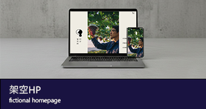
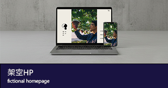

2000年生まれ。愛知県出身。幼少期から、絵を描くことや工作が大好き。
四大卒業後、看護師として就職。仕事にやりがいを感じつつも、子供の頃から
憧れたデザイン業界に挑戦するため、退職。
異業種への転職は難航し、金銭的な問題から一時工場の製造員に転職。
在職中にWEB解析士の資格を取得。
現在は、職業訓練校に通いながら転職活動中。
ご覧いただきありがとうございました。
お問い合わせは、下記メールアドレスまでお願いします。
 
